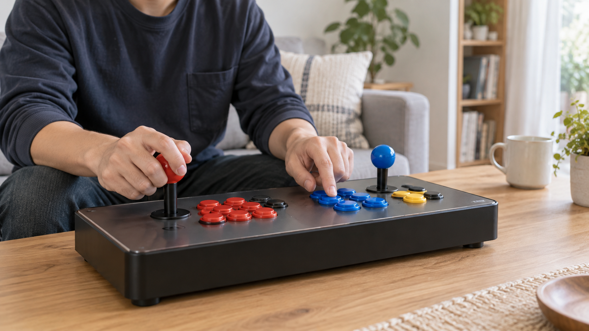
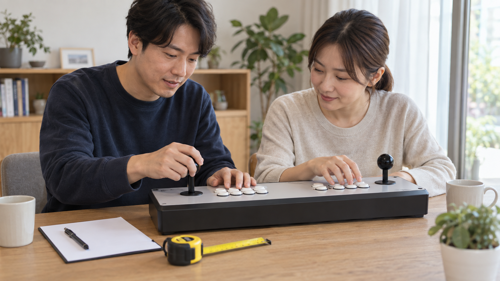

가정용 오락기의 조이스틱과 버튼은 외형이나 개수만 보지 말고, 원하는 방향이 정확히 입력되는지와 각 버튼이 한 번씩 반응하는지, 사용할 자세에서 손이 편하게 닿는지를 확인해야 합니다. 구매 전에는 상품 안내에서 조작부 구성과 지원 범위를 확인하고, 모호한 부분은 제품명을 적어 판매자에게 문의하세요.
조작부 구성을 상품 안내에서 확인하세요
먼저 구매하려는 제품의 조이스틱 수와 버튼 배치, 1인용·2인용 구성 여부를 판매 페이지에서 확인하세요. 사진만으로 버튼의 실제 기능이나 특정 게임에서의 배치를 단정하기는 어렵습니다. 함께 즐길 계획이라면 가정용 오락기의 2인 이용 기준처럼 두 사람이 동시에 사용할 수 있는지와 게임별 이용 안내도 따로 살펴보세요.
조이스틱 수와 버튼 배치는 구매하려는 제품의 최신 안내를 기준으로 확인해야 합니다.

방향과 버튼을 하나씩 확인하세요
직접 확인할 수 있다면 게임을 실행한 뒤 조이스틱을 위·아래·왼쪽·오른쪽으로 천천히 움직이고, 버튼도 하나씩 눌러 화면의 반응을 살펴보세요. 여러 버튼을 한꺼번에 누르면 어느 입력에서 차이가 생겼는지 알기 어렵습니다. 노리박스는 제품을 소개하기 전에 게임을 직접 실행하고 조이스틱과 버튼을 만져보며 사용 과정의 불편을 확인한다고 밝히고 있습니다.
방향 입력과 버튼 반응은 게임을 실행한 상태에서 하나씩 나눠 확인하는 편이 정확합니다.

손의 거리와 사용 자세를 살펴보세요
조이스틱과 버튼 사이의 거리, 손목이 놓이는 위치, 팔을 움직일 여유를 함께 보세요. 두 사람이 사용할 때는 서로의 팔이 자주 닿지 않는지와 화면을 편하게 볼 수 있는지도 확인할 기준입니다. 스탠드형·좌식형·TV 연결형의 자세 차이는 우리 집 공간에 맞는 오락기 형태에서 이어서 비교할 수 있습니다.
조작부는 사용할 사람의 손 크기와 자세, 주변 공간을 함께 놓고 판단해야 합니다.
이상이 있으면 증상을 기록해 문의하세요
입력이 빠지거나 한 방향이 계속 눌린 것처럼 보이면 임의로 분해하기 전에 제품명과 게임명, 문제가 생기는 방향이나 버튼을 기록하세요. 가능하면 같은 동작을 다시 해 보고 반복 여부를 확인한 뒤 판매자가 안내한 문의 경로를 이용하세요. 제품별 부품과 지원 범위는 다를 수 있으므로 다른 기기의 해결 방법을 그대로 적용하지 않는 편이 안전합니다.
문의에는 제품명과 게임명, 문제가 생기는 입력과 반복 여부를 함께 적어야 합니다.
현재 노리박스 오락실게임기와 관련 제품은 제품자세히보기에서 확인하세요.